戚风蛋糕，果然是失败率高！
用料
- 低筋面粉 50克
- 鸡蛋 3个
- 纯牛奶 30克
- 细砂糖 45克+15克
- 玉米油 30克
做法
1. 准备材料
称量准备好所有材料。
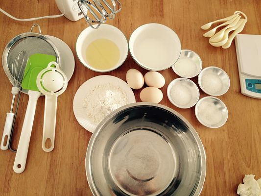
2. 蛋白打发
准备好45g白砂糖，用打蛋器把蛋白打到呈鱼眼泡状的时候,加入1/3的细砂糖(15克)
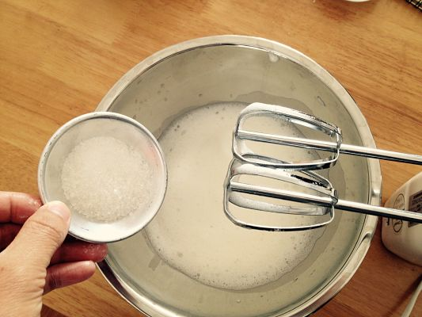
继续搅打到蛋白开始变浓稠,呈较粗泡沫时,再加入1/3糖再继续搅打
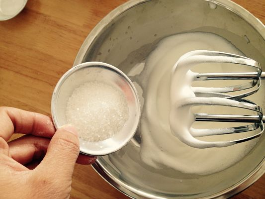
到蛋白比较浓稠,表面出现纹路的时候,加入剩下的1/3糖
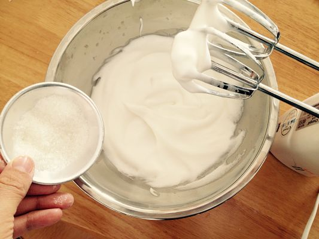
提起打蛋器有弯钩出现，蛋白打发完毕
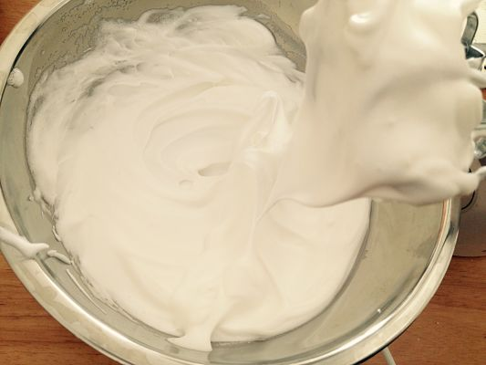
至于分次加糖的原因是，如果一次加入糖过多,会妨碍蛋白的起泡,所以打蛋白的时候,一般习惯使用分次加糖的方式，做好后把打好的蛋白放入冰箱冷藏。
3. 制蛋黄糊
把3个蛋黄加入15克细砂糖,手动打散，不要把蛋黄打发
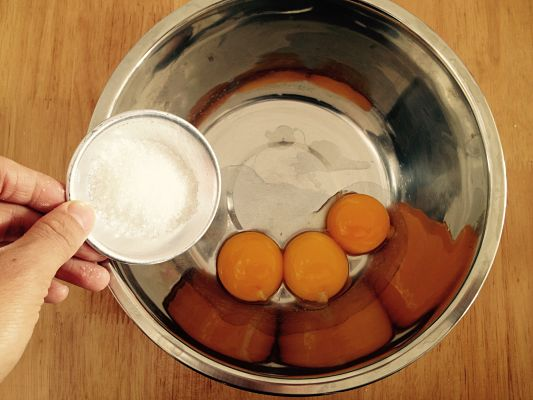
依次加入30克玉米油和30克牛奶,搅拌均匀
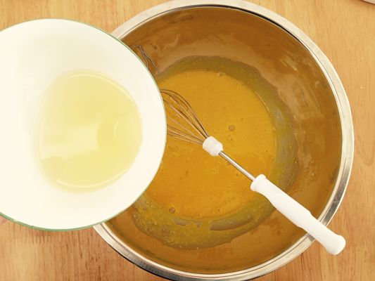
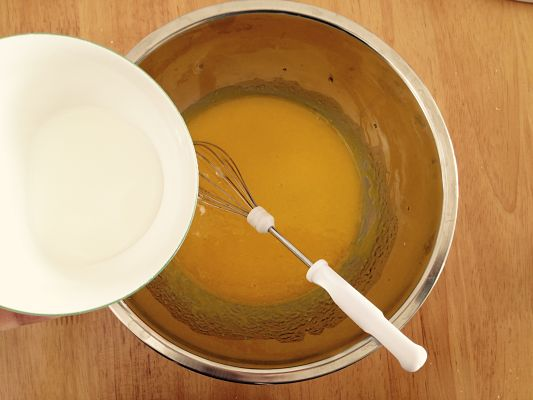
再加入过筛后的面粉,用橡皮刮刀轻轻翻拌均匀，不要过度搅拌,以免面粉起筋（面粉如果起筋,可能会使蛋糕的口感过韧,影响蛋糕口感的松软）
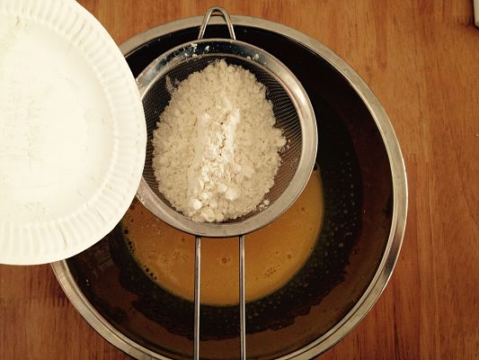
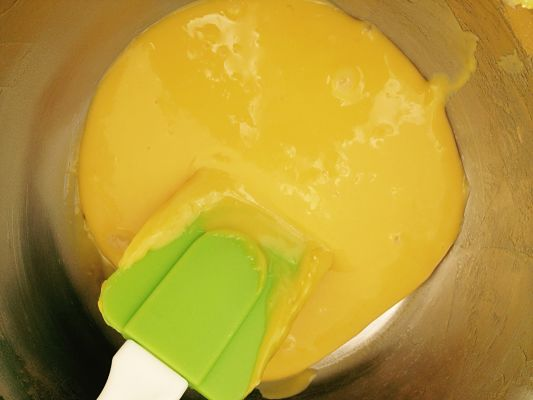
4. 制蛋糕糊
盛1/3蛋白到蛋黄糊中，用橡皮刮刀轻轻翻拌均匀(从底部往上翻拌,不要划圈搅拌,以免蛋白消泡)
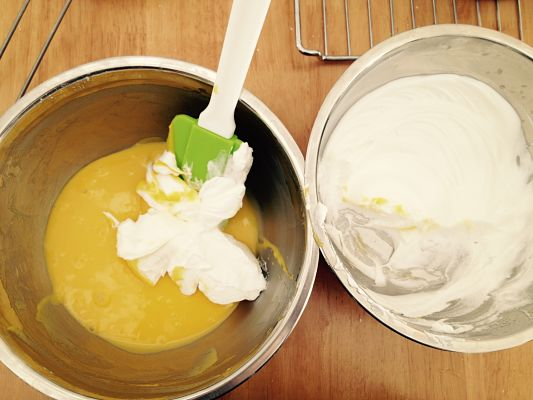
翻拌均匀后,把蛋白全部倒入盆中,用同样的手法翻拌均匀,直到蛋白和蛋黄糊充分混合
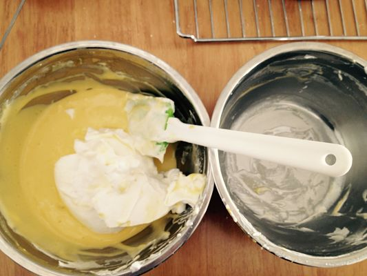
5. 入模烘焙
将混合好的蛋糕糊倒入6寸模具抹平,用手端住模具在距离桌面10厘米的高处松手震两下,把内部的大气泡震出来
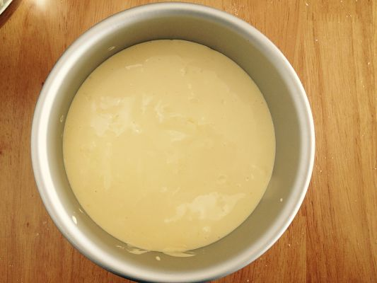
烤箱预热165度,烘焙50分钟
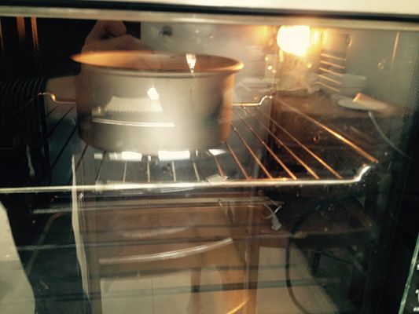
6. 蛋糕脱模
烤好后的蛋糕从烤箱里取出来,立即倒扣在冷却架上直到冷却（太慢容易回缩），冷却后用脱模刀脱模即可。
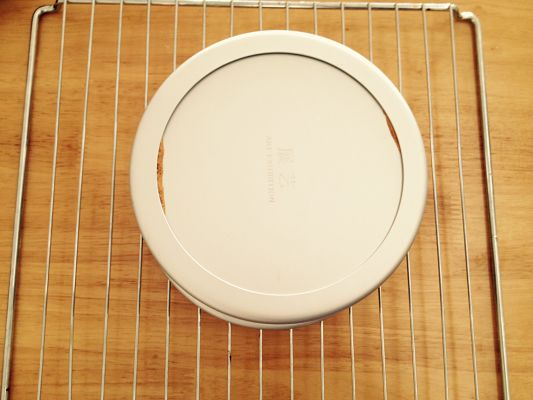
7. 赤裸炫耀
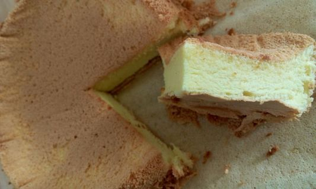